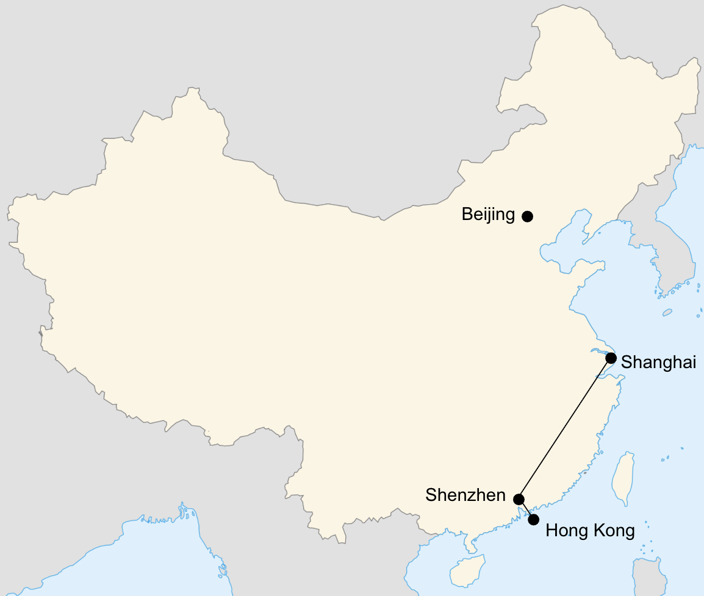
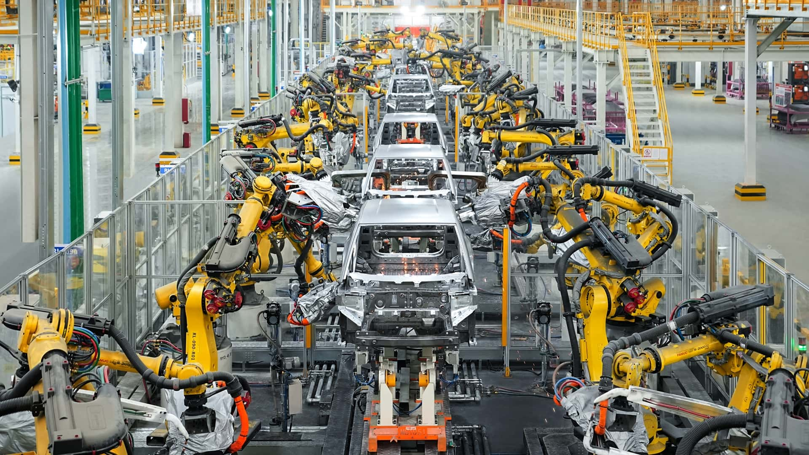
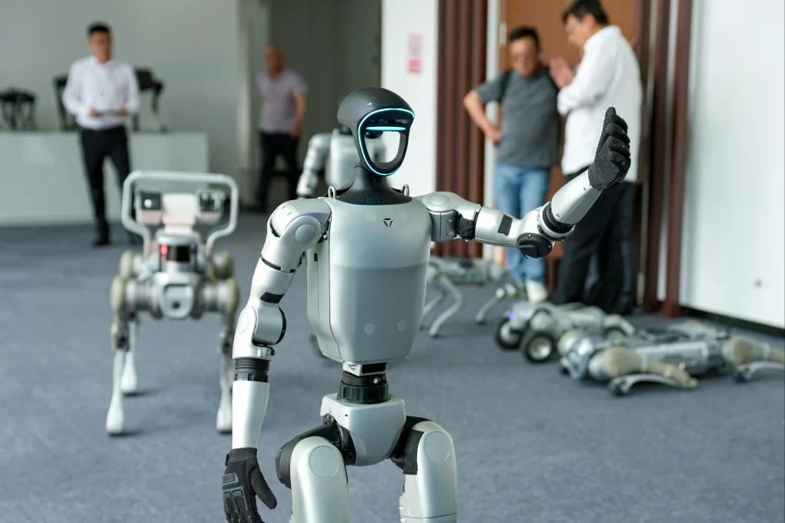

Discover China's Tech
Hong Kong → Shenzhen → Shanghai

Itinerary
Gateway to China
- Welcome Dinner — expert talk: Why China, Why Now, featuring a China analyst from Gavekal Dragonomics
- Explore the City — Dragon's Back coastal hike, city walking tour, and Cantonese dim sum experience
- High-Speed Train — cross into Shenzhen on the high speed train
The Hardware Frontier

- BYD Tour — walk the EV assembly line at BYD's factory
- Hardware Market — explore the world's largest electronics market in Huaqiangbei and order drone delivery coffee
The Rise of Applied AI

- Unitree Robotics — visit HQ and interact with humanoid robots up close
- SenseTime — learn how China is building smart cities with AI
- Local Food Tour — noodles, xiaolongbao, and Shanghai street food
- Farewell Dinner — optional night out on Shanghai's clubbing scene
What's included
Included
- Welcome and farewell dinners
- Daily breakfast
- All hotels — centrally located, comfortable but not luxury
- All ground transport and transfers
- All company visits, tours, and activities
- Local guide throughout — Yaqi, our China-based partner
- All booking and logistics handled end to end
Not included
- International flights
- Lunches and dinners (outside welcome and farewell dinners)
- Personal expenses
Good to know
I'm interested
- Seamless logistics — local Chinese guide, all transfers and coordination handled end to end
- Visa-free for Americans — designed to meet China's 10-day visa-free rules
- Direct flights from SF — non-stop SFO to Hong Kong